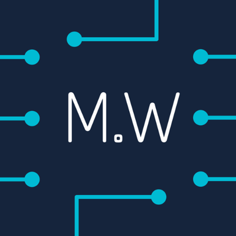

Stop monolithic apps!
Easy to develop
Easy to test
Easy to deploy
Works well for most "small" apps.
How can improve performance, when volume of client-side request is high?
How do integrate code using different stacks?
How can we push smaller (or not) changes in production?
How to isolate fails?
How?
Microservices
Why?
Technology Agnostic
Domain Developed
Relatively Small
---
Develop & deploy independently
Easy to understand
Improve fault isolation
Independently Automated Deployable
No vendor lock
The key?
Architecture
Comunnications
Polyglot Databases
Domain Drive Development

Eric Evans 2004
https://www.infoq.com/news/2015/06/dddx-microservices-boundariesIt's fine, but give me an example!
Most Google Apps
Amazon (Store)
Netflix
Spofity
Zalando
Hundreds and hundreds
Something more easy please!
SMS
Student Management System
https://github.com/ButterFlyDevs/StudentsManagementSystem/
Infraestructura
¿Dónde realizamos el despliegue de la aplicación?
¿Amazon AWS?
¿Microsoft Azure?
¿Heroku?
¿Open Shift?
¿Google App Engine?
...

References
Martin Fowler
martinfowler.com @martinfowlerMicroService Weekly
 microserviceweekly.com @microservicelyAny question?
Ask us!